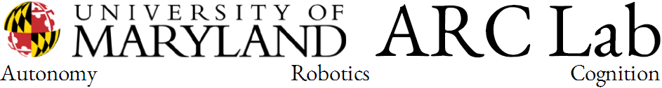

The need for Autonomy, Robotics and Cognition Research
It has been repeatedly argued that the mind, or an intelligent autonomous system, is an
amalgam of several competences – computational capabilities related to perception,
planning, control and reasoning. Thus, the design of an autonomous system depends
on the integration of algorithms and data structures in computer vision, computer
audition, tactile processing, control theory, planning and reasoning (artificial
intelligence). As these fields however are practiced mostly in silos by experts who
cannot know the details of the other disciplines, it becomes hard to achieve the
integration that may give rise to autonomy.
Motivation for the workshop
This workshop, the first of its kind, gathers experts from all these disciplines surrounding
intelligent behavior, to address a number of basic questions: what kinds of description
should an autonomous system extract about the world? Should it be a general purpose
description that then different processes will utilize, or should an autonomous system
directly produce a plethora of different representations about the world? Could
autonomy be accomplished with one sense, or is a sensor fusion a necessary ingredient
for autonomy and intelligence? How much prediction is required to achieve autonomy
and how does this constrain the planning sub-system as it needs to be integrated with
sensing? How much of the system’s time should be devoted to computation and how
much to communication? Does autonomy require some sort of language, like natural
language?
Format of the workshop
These and other related questions will be addressed by international experts during a
two day workshop at the University of Maryland, supported in part by the National
Science Foundation, DARPA and ONR. The format of the workshop consists of half
hour talks and panels examining specific questions. The workshop is free of charge but
participants need to register so that we can plan for the breakfast and lunch during the
workshop days.